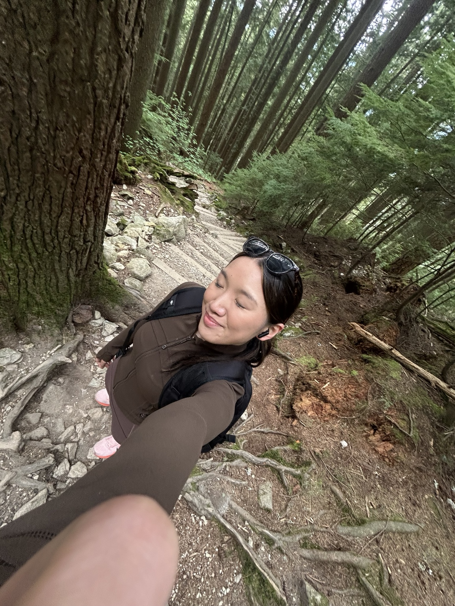
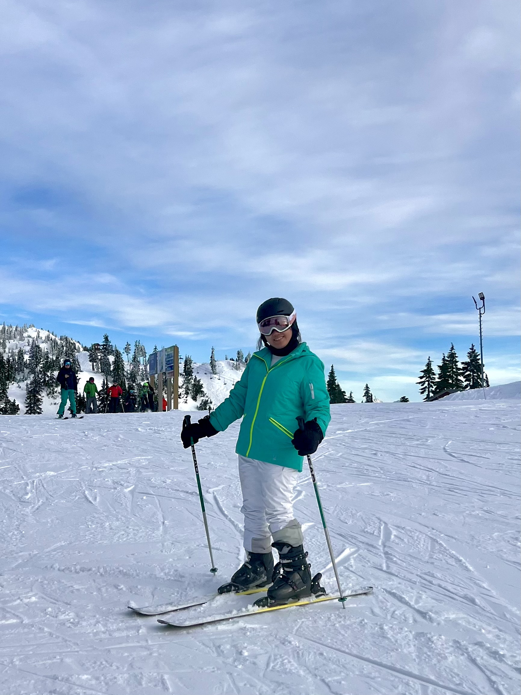

Qthos · Quenifer's Ethos
Hello, world! I'm Quenifer, and I love thinking in diagrams. Everything in life is connected, even when those connections are hard to see.
Turning messy thoughts into simple visual systems has helped me solve problems in my personal life, my career, and everything in between.
These mini systems started as a way to organize my own thoughts. And I hope it helps you too as we navigate this big, beautiful life together.


A new series where I try to untangle your problems for you.
Tell me your biggest problem. I will turn it into a framework that might help us see it differently.
Thank you for trusting me with your story.